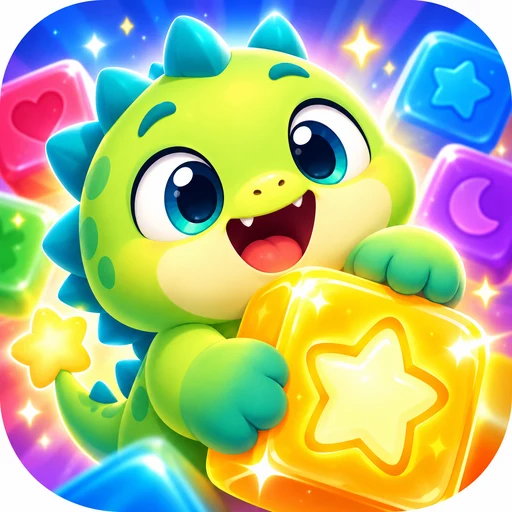

Need help with Pogo Pop: Block Puzzle? Email us and we will reply as soon as we can, usually within 2 working days.
Email: Development@mjsandyoungs.co.uk
Please tell us your device (for example iPhone 15 or Galaxy S23), the version of Pogo Pop and the level you were on.
Drag the pieces from the tray onto the 8x8 board. Fill a whole row or column to pop it. Clear several lines at once for combos. When no piece fits, the round is over. Each level has its own goals, shown at the top of the screen.
Shadowrex's minions play tricks on the board, like fog, ice or spinning pieces. When a minion flashes red, tap it quickly to catch it, cancel the trick and earn coins. Every 40th level is a boss battle with a health bar.
Yes. Your progress is saved on your device only. We have no servers and no accounts, so progress cannot be moved between devices, and deleting the app deletes your progress.
Tap the cog button on the home screen and switch Sound effects, Music or Vibration off.
See our privacy policy. The iPhone and iPad version shows no ads and collects no data.